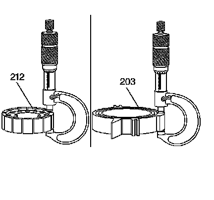

Oil Pump Rotor and Slide Measurement
Oil Pump Rotor and Slide Measurement

Important: Measure the rotor and slide thickness for surface wear. The rotor and slide measurements must both fall into the same thickness range. If the rotor and slide measurements do not fall into the same thickness range, or are outside of all the ranges, the oil pump must be replaced as an assembly.
^ Refer to Oil Pump Rotor and Slide Measurement.
^ Measure the oil pump rotor (212) thickness.
^ Measure the oil pump slide (203) thickness.